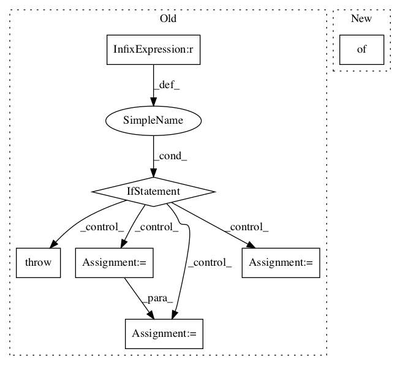

14b7ac5210cf4d4e4cdffcc7739cc0c9817c6a00,official/vision/beta/serving/image_classification_test.py,ImageClassificationExportTest,_export_from_module,#ImageClassificationExportTest#Any#Any#Any#,40

Before Change
return classification_module
def _export_from_module(self, module, input_type, save_directory):
if input_type == "image_tensor":
input_signature = tf.TensorSpec(shape=[None, 224, 224, 3], dtype=tf.uint8)
signatures = {
"serving_default":
module.inference_from_image_tensors.get_concrete_function(
input_signature)
}
elif input_type == "image_bytes":
input_signature = tf.TensorSpec(shape=[None], dtype=tf.string)
signatures = {
"serving_default":
module.inference_from_image_bytes.get_concrete_function(
input_signature)
}
elif input_type == "tf_example":
input_signature = tf.TensorSpec(shape=[None], dtype=tf.string)
signatures = {
"serving_default":
module.inference_from_tf_example.get_concrete_function(
input_signature)
}
else:
raise ValueError("Unrecognized `input_type`")
tf.saved_model.save(module,
save_directory,
signatures=signatures)
After Change
def _export_from_module(self, module, input_type, save_directory):
signatures = module.get_inference_signatures(
{input_type: "serving_default"})
tf.saved_model.save(module,
save_directory,
signatures=signatures)
In pattern: SUPERPATTERN
Frequency: 3
Non-data size: 7
Instances
Project Name: tensorflow/models
Commit Name: 14b7ac5210cf4d4e4cdffcc7739cc0c9817c6a00
Time:
Author: null
File Name: official/vision/beta/serving/image_classification_test.py
Class Name: ImageClassificationExportTest
Method Name: _export_from_module
Project Name: tensorlayer/tensorlayer
Commit Name: 3d305831a0edd1288cc2f94f81debbdc359d7bb3
Time:
Author: null
File Name: tensorlayer/layers/lambda_layers.py
Class Name: Lambda
Method Name: __init__
Project Name: tensorflow/models
Commit Name: 14b7ac5210cf4d4e4cdffcc7739cc0c9817c6a00
Time:
Author: null
File Name: official/vision/beta/serving/semantic_segmentation_test.py
Class Name: SemanticSegmentationExportTest
Method Name: _export_from_module